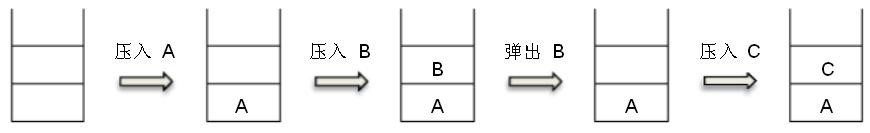
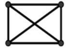
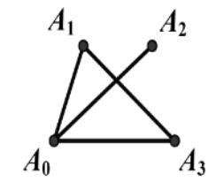
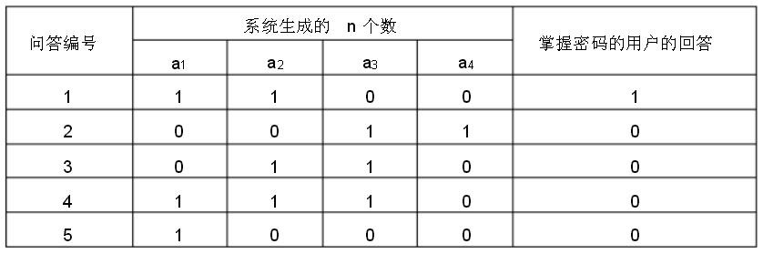

一、单选题（共20 题，每题 1.5 分，共计 30 分；每题有且仅有一个正确选项）
| 1. | 一个 32 位整型变量占用（ ）个字节。 |
|---|
| 2. | 二进制数11.01在十进制下是（ ）。 |
|---|
| 3. | 下面的故事与（ ）算法有着异曲同工之妙。 从前有座山，山里有座庙，庙里有个老和尚在给小和尚讲故事： 从前有座山，山里有座庙，庙里有个老和尚在给小和尚讲故事： ‘从前有座山，山里有座庙，庙里有个老和尚给小和尚讲故事....’ |
|---|
| 4. | 逻辑表达式（ ）的值与变量A的真假无关。 |
|---|
| 5. | 将（2,6,10,17）分别存储到某个地址区间为0~10 的哈希表中， 如果哈希函数h(x) =（ ），将不会产生冲突，其中a mod b 表示a除以b的余数。 |
|---|
| 6. | 在十六进制表示法中，字母A相当于十进制中的（ ）。 |
|---|
| 7. | 下图中所使用的数据结构是（ ）。 |
|---|---|
|  |
| 8. | 在 Windows资源管理器中，用鼠标右键单击一个文件时，会出现一个名为“复制”的操作选项，它的意思是（ ）。 |
|---|
| 9. | 已知一棵二叉树有10个节点，则其中至多有（ ）个节点有 2 个子节点。 |
|---|
| 10. | 在一个无向图中，如果任意两点之间都存在路径相连，则称其为连通图。 下图是一个有4个顶点、6条边的连通图。若要使它不再是连通图，至少要删去其中的（ ）条边。 |  |
|---|
| 11. | 二叉树的（ ）第一个访问的节点是根节点。 |
|---|
| 12. | 以 A0作为起点，对下面的无向图进行深度优先遍历时，遍历顺序不可能是（ ）。 |  |
|---|
| 13. | IPv4 协议使用32 位地址，随着其不断被分配，地址资源日趋枯竭。 因此，它正逐渐被使用（ ）位地址的 IPv6 协议所取代。 |
|---|
| 14. | （ ）的平均时间复杂度为O(nlogn)，其中n是待排序的元素个数。 |
|---|
| 15. | 下面是根据欧几里得算法编写的函数，它所计算的是a和b的（ ）。
int euclid(int a, int b){
if (b == 0)
return a;
else
return euclid(b, a % b);
}
|
|---|
| 16. | 通常在搜索引擎中，对某个关键词加上双引号表示（ ）。 |
|---|
| 17. | 中国的国家顶级域名是（ ）。 |
|---|
| 18. | 把64位非零浮点数强制转换成32位浮点数后，不可能（ ）。 |
|---|
| 19. | 下列程序中，正确计算1, 2,⋯, 100这100个自然数之和sum（初始值为0）的是（ ）。 |
|---|
i = 1;
do {
sum += i;
i++;
}while(i<=100);
|
|
i = 1;
do {
sum += i;
i++;
}while(i>100);
|
|
i = 1;
while(i<100) {
sum += i;
i++;
}
|
|
i = 1;
while(i>=100) {
sum += i;
i++;
}
|
| 20. | CCF NOIP复赛全国统一评测时使用的系统软件是（ ）。 |
|---|
二、问题求解（共2 题，每题 5 分，共计 10 分）
| 1. | 7 个同学围坐一圈，要选2个不相邻的作为代表，有 种不同的选法。 |
|---|
| 2. | 某系统自称使用了一种防窃听的方式验证用户密码。
密码是n 个数 s1, s2, ⋯ , sn，均为 0或 1。
该系统每次随机生成 n 个数 a1, a2, ⋯ , an，
均为 0或1，请用户回答 (s1a1 + s2a2 + ⋯+ snan)
除以 2 的余数。如果多次的回答总是正确，即认为掌握密码。
该系统认为，即使问答的过程被泄露，
也无助于破解密码——因为用户并没有直接发送密码。 然而，事与愿违。例如，当n=4 时，有人窃听了以下5 次问答： |
|---|---|
|  | |
| 就破解出了密码: s1 = ， s2 = ， s3 = ， s4 = 。 |
三、阅读程序写结果（共4 题，每题 8 分，共计 32 分）
| 1. |
#include <iostream>
using namespace std;
int main(){
int a, b;
cin >> a >> b;
cout << a << "+" << b << "=" << a+b << endl;
}
|
||||
|---|---|---|---|---|---|
|
| 2. |
#include <iostream>
using namespace std;
int main(){
int a, b, u, i, num;
cin >> a >> b >> u;
num = 0;
for (i = a; i <= b; i++)
if ((i % u) == 0)
num++;
cout << num << endl;
return 0;
}
|
||||
|---|---|---|---|---|---|
|
| 3. |
#include <iostream>
using namespace std;
int main(){
const int SIZE = 100;
int n, f, i, left, right, middle, a[SIZE];
cin >> n >> f;
for (i = 1; i <= n; i++)
cin >> a[i];
left = 1;
right = n;
do {
middle = (left + right) / 2;
if (f <= a[middle])
right = middle;
else
left = middle + 1;
} while (left < right);
cout << left << endl;
return 0;
}
|
||||||
|---|---|---|---|---|---|---|---|
|
| 4. |
#include <iostream>
using namespace std;
int main() {
const int SIZE = 100;
int height[SIZE], num[SIZE], n, ans;
cin >> n;
for (int i = 0; i < n; i++) {
cin >> height[i];
num[i] = 1;
for (int j = 0; j < i; j++) {
if ((height[j] < height[i]) && (num[j] >= num[i]))
num[i] = num[j] + 1;
}
}
ans = 0;
for (int i = 0; i < n; i++){
if (num[i] > ans)
ans = num[i];
}
cout << ans << endl;
}
|
||||||
|---|---|---|---|---|---|---|---|
|
四、完善程序（共2 题，每题 14 分，共计 28 分）
| 1. | （序列重排）全局数组变量 a 定义如下：
const int SIZE = 100; int a[SIZE], n;它记录着一个长度为 n 的序列a[1], a[2], ⋯ , a[n]。 现在需要一个函数，以整数p(1 ≤ p ≤ n)为参数，实现如下功能： 将序列a的前 p个数与后n–p个数对调，且不改变这p个数（或n–p个数）之间的相对位置。 例如，长度为5的序列1,2,3,4,5，当p=2时重排结果为3,4,5,1,2。 有一种朴素的算法可以实现这一需求，其时间复杂度为O(n)、空间复杂度为O(n)： |
|---|
void swap1(int p){
int i, j, b[SIZE];
for (i = 1; i <= p; i++)
b[] = a[i];
for (i = p + 1; i <= n; i++)
b[i - p] = ;
for (i = 1; i <= ; i++)
a[i] = b[i];
}
我们也可以用时间换空间，使用时间复杂度为O(n2)、空间复杂度为O(1)的算法：
void swap2(int p){
int i, j, temp;
for (i = p + 1; i <= n; i++) {
temp = a[i];
for (j = i; j >= ; j--)
a[j] = a[j - 1];
= temp;
}
}
|
| 2. | （二叉查找树） 二叉查找树具有如下性质： 每个节点的值都大于其左子树上所有节点的 值、 小于其右子树上所有节点的值。试判断一棵树是否为二叉查找树。 输入的第一行包含一个整数n，表示这棵树有n个顶点， 编号分别为1,2, ⋯,n，其中编号为1的为根结点。 之后的第i行有三个数value, left_child, right_child， 分别表示该节点关键字的值、左子节点的编号、右子节点的编号； 如果不存在左子节点或右子节点，则用0代替。 输出1表示这棵树是二叉查找树，输出0 则表示不是。 |
|---|
#include <iostream>
using namespace std;
const int SIZE = 100;
const int INFINITE = 1000000;
struct node {
int left_child, right_child, value;
};
node a[SIZE];
int is_bst(int root, int lower_bound, int upper_bound){
int cur;
if (root == 0)
return 1;
cur = a[root].value;
if ((cur > lower_bound) && () &&
(is_bst(a[root].left_child, lower_bound, cur) == 1) &&
(is_bst(, , ) == 1))
return 1;
return 0;
}
int main(){
int i, n; cin>>n;
for (i = 1; i <= n; i++)
cin >> a[i].value >> a[i].left_child >> a[i].right_child;
cout << is_bst( ,-INFINITE, INFINITE) << endl;
return 0;
}
|